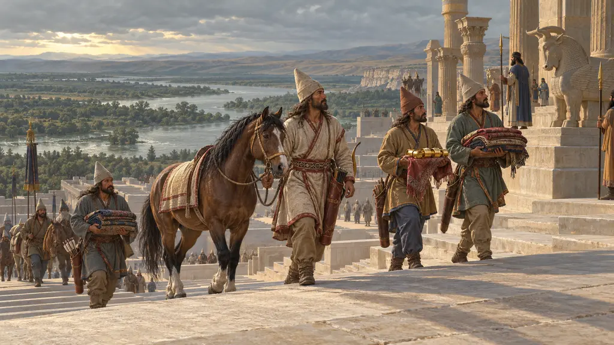
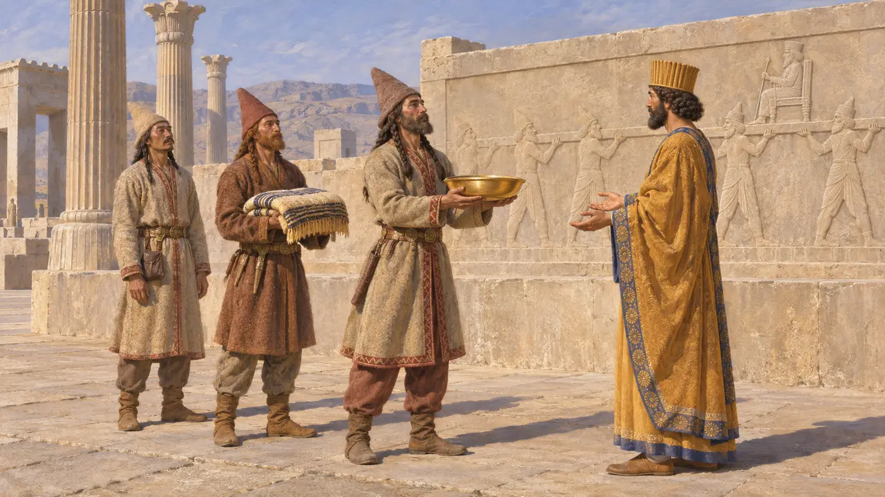
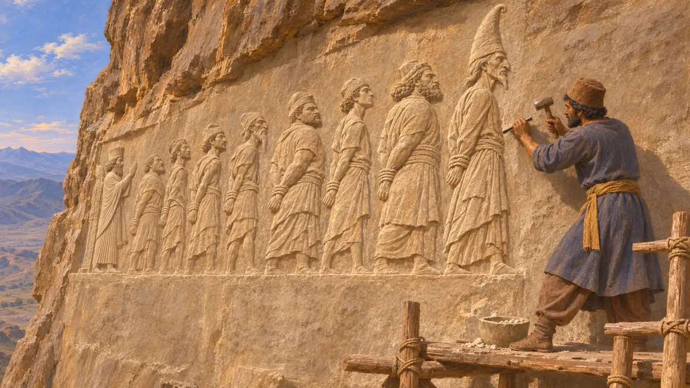
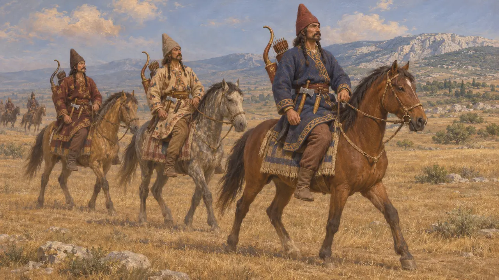
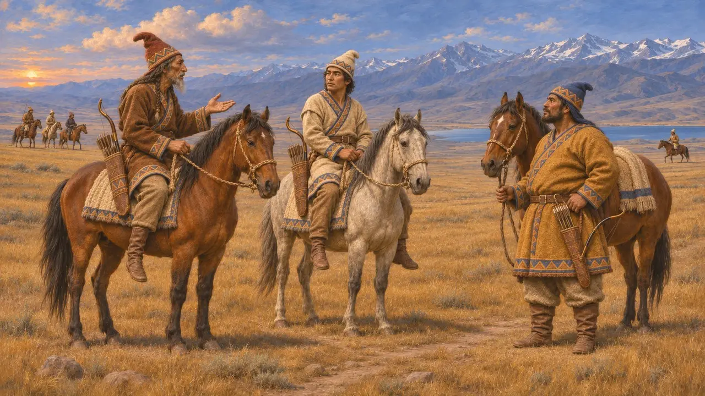
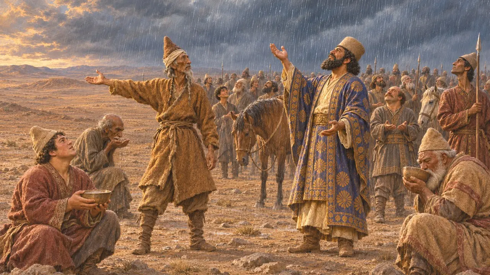

Los sakas
Pueblos nómadas de Asia Central que sirvieron a los reyes persas, hacia 540-479 a. e. c.
Los sakas eran pueblos jinetes, en su mayoría pastores, de las estepas y montañas al norte y al este de Bactria. Hablaban lenguas iranias emparentadas con el persa. Las inscripciones de Darío enumeran varios grupos sakas entre sus tierras, y Heródoto registra a sakas luchando por el Rey en Maratón y juzga a sus jinetes los mejores del bando persa en Platea.
En el juego: El juego presenta a los saka como arqueros del ejército del Rey, lo que concuerda con el relato de Heródoto sobre los flecheros saka. La historia también los recuerda como jinetes, y Heródoto los consideró los mejores del bando persa en Platea.

Los saka en las listas del Rey
En los documentosLa inscripción de Behistún cuenta a los sakas entre las tierras que pasaron a manos de Darío en el 522. Listas posteriores, como la de su tumba en Naqsh-e Rostam, los dividen en tres grupos: los sakas bebedores de haoma, los sakas de gorros puntiagudos y los sakas de allende el mar. En las fachadas de las tumbas y en Persépolis, las figuras de sakas llevan altos gorros puntiagudos, casacas ceñidas con cinturón y pantalones. Aparecen sosteniendo el trono del Rey o trayendo presentes.
DB §6; DNa §3

Darío y Skunkha
En los documentosSe añadió una quinta columna a la inscripción de Behistún. En su texto dañado, Darío dice que marchó contra los saka, muy probablemente los de gorros puntiagudos, que los derrotó y capturó a su jefe Skunkha, y que puso a otro hombre en su lugar. La campaña tuvo lugar probablemente hacia 519. Al final de la fila de rebeldes cautivos se talló una figura de Skunkha con un alto gorro puntiagudo, añadida cuando el relieve ya estaba terminado.
DB col. V

En los ejércitos de Darío y Jerjes
Relato antiguoHeródoto describe a los saka del ejército de Jerjes del 480. Llevaban altos gorros puntiagudos y pantalones, portaban arcos, puñales y hachas, y servían junto a los bactrianos a las órdenes de Histaspes, hijo de Darío. Hubo saka que sirvieron también como infantería de marina en la flota. Heródoto dice que los persas y los saka rompieron el centro ateniense en Maratón en el 490, y en Platea, en el 479, juzga a los saka los mejores jinetes del bando persa.
Herodotus 7.64; 7.184; 6.113; 9.71

Quiénes eran considerados saka
En disputaHeródoto afirma que los persas llamaban saka a todos los escitas, de modo que los nombres griegos y persas no coinciden con exactitud. Los historiadores aún discuten dónde vivía cada grupo saka: a los bebedores de haoma se los suele situar en la región del Pamir y Ferganá, y a los saka de gorro puntiagudo cerca del mar de Aral o del Tian Shan. A los saka de allende el mar se los sitúa al norte del mar Negro o al otro lado del Caspio. También se debate hasta qué punto el Rey controlaba a estos pueblos de la estepa.
Herodotus 7.64; P. Briant, From Cyrus to Alexander, 2002

El pastor que se mutiló a sí mismo
Leyenda posteriorPolieno, que escribió en el siglo II e. c., habla de un pastor saka que se mutiló y se presentó ante Darío como desertor. Después condujo al ejército persa a un desierto sin agua, y el Rey solo se salvó gracias a la lluvia. El relato recuerda la historia de Zópiro en Babilonia que narra Heródoto, y ningún texto persa lo confirma. La historia de la muerte de Ciro frente a la reina Tomiris se refiere a los maságetas, un pueblo que autores posteriores incluían a veces entre los saka.
Polyaenus, Stratagems; Herodotus 1.214
Fuentes
- Darius, Behistun inscription (DB §6, col. V)
- Darius, tomb inscription at Naqsh-e Rostam (DNa §3)
- Herodotus 3.93; 6.113; 7.64; 7.184; 9.71
- P. Briant, From Cyrus to Alexander, 2002
- A. Kuhrt, The Persian Empire, 2007
- Polyaenus, Stratagems